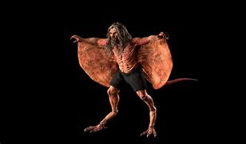

Krahang es una figura del folclore tailandés conocida por ser un espíritu nocturno que causa miedo y asombro en diversas comunidades rurales del sudeste asiático. A continuación, te presento una detallada introducción y descripción del Krahang.
El Krahang es una entidad sobrenatural masculina que, según las historias, tiene la capacidad de volar durante la noche utilizando dos grandes cestas de arroz tejidas como alas. A diferencia del Krasue, el Krahang es considerado una criatura más física y menos fantasmagórica, aunque no menos aterradora.
Durante el día, el Krahang parece completamente normal, pero al caer la noche se transforma. En su forma nocturna, vuela desnudo usando las cestas de arroz como alas, mostrando una fuerza sobrehumana y siendo avistado frecuentemente en áreas rurales y cerca de cuerpos de agua.
El origen del Krahang no está claramente definido, pero se cree que proviene de creencias animistas y supersticiones rurales. Algunas leyendas sugieren que el Krahang es el espíritu de un hombre que cometió actos atroces durante su vida y fue condenado a volar y causar estragos por la noche.
Muchos relatos sobre el Krahang provienen de pequeñas comunidades rurales, donde los aldeanos afirman haberlo visto volando sobre campos y bosques, especialmente en noches de luna llena. Aunque no se le atribuyen los mismos hábitos sangrientos que al Krasue, el Krahang es conocido por asustar a las personas y causar disturbios nocturnos.
Las comunidades que creen en el Krahang utilizan varias formas de protección. Algunos colocan objetos afilados y espinosos alrededor de sus casas para mantenerlo alejado, ya que se cree que estas barreras pueden detenerlo. Otros recurren a amuletos y rituales espirituales para protegerse de su influencia.
Aunque no es tan ampliamente representado como el Krasue, el Krahang ha aparecido en algunas películas y programas de televisión en Tailandia, reflejando su lugar en el folclore local. Estas representaciones suelen destacar su naturaleza misteriosa y aterradora, manteniendo viva la fascinación por esta figura mítica.
El Krahang es una figura intrigante del folclore tailandés que añade una capa de misterio y terror a las noches rurales del sudeste asiático. Al igual que muchas leyendas, el Krahang refleja las creencias y temores de las comunidades que lo narran, proporcionando una ventana a las ricas tradiciones culturales de la región.
